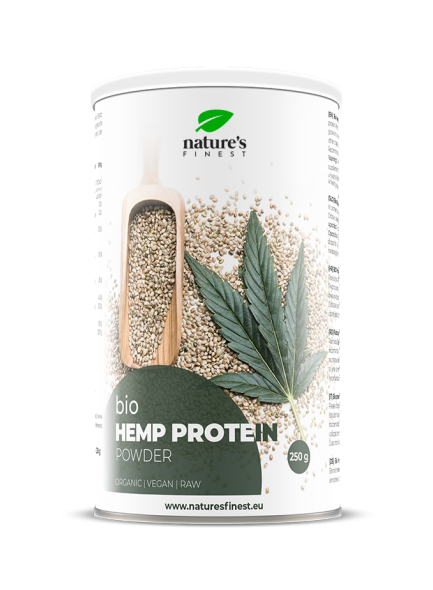

HEMPCRETE

HEMP FURNITURES

HEMP WOOL AND FIBRE
HEMP CLOTHES

WHAT IS HEALTHY CANNA.CO MISSION? Our mission is: to sets the standard for cannabis retail by redefining the experience of purchasing cannabis and cannabis products. there by helping dissolve the negative stigma associated with the industry. .
HEMPCRETE
HEMP FURNITURES
HEMP WOOL AND FIBRE
HEMP CLOTHES
HEMP PROTIEN POWDER

Company Values: Eco-Friendly and Family-Centered Cannabis
At [ HEALTHY CANNA.CO], we believe in creating a positive impact on both the planet and the people we serve. Our values are rooted in sustainability, family, and community, and these principles guide everything we do.
1. Eco-Friendly Practices
We are deeply committed to protecting the environment. From our cultivation methods to our packaging, we strive to minimize our ecological footprint at every step. This means:
Sustainable Farming: We use organic growing practices, avoiding harmful pesticides and chemicals, and promote soil health to ensure our products are natural and pure.
Waste Reduction: We prioritize reducing waste through eco-friendly packaging, recycling programs, and reducing single-use plastics in our operations.
Energy Efficiency: Our production facilities are designed with energy efficiency in mind, using renewable energy sources wherever possible to reduce our carbon emissions.
2. Family-Oriented Values
We believe that the cannabis industry can be family-friendly, responsible, and grounded in care. We value:
Transparency: We are committed to providing clear and honest information about our products, ensuring that families and individuals can make informed choices.
Community and Support: We support local communities and families through educational initiatives, responsible use advocacy, and outreach programs.
Health and Wellness: Our products are designed with the well-being of our consumers in mind, focusing on holistic wellness, safety, and quality.
This approach ensures that your cannabis brand not only stands out for its commitment to the environment but also appeals to families and individuals looking for trustworthy, safe, and responsible products.
Find us at our store location: